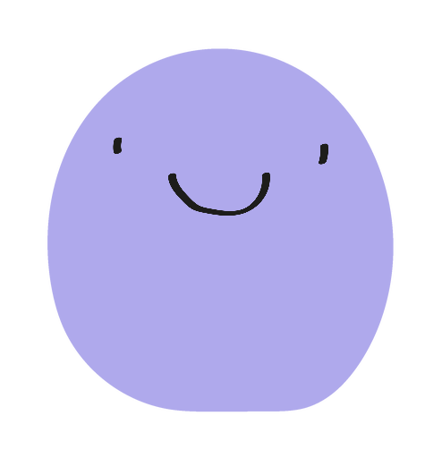
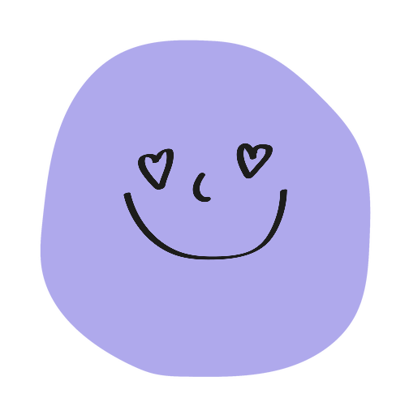

App en desarrollo · iPhone
El cuaderno clínico que usarías con los ojos entrecerrados.
Lleva el historial completo de tus migrañas y descubre cómo te afecta la presión barométrica. Tu cuaderno clínico, siempre contigo.

Tu mes, de un vistazo
Cada día se colorea según la intensidad.
leve
media
intensa
Historial de migrañas
Cada episodio queda guardado en un calendario coloreado por intensidad. Mira de un vistazo cómo evolucionan tus crisis mes a mes.
Detector barométrico
Captura la presión atmosférica al instante y la cruza con tus episodios para enseñarte el patrón.
Respirador de crisis
Alivio guiado mientras pasa lo peor, sin salir de la app y sin luces que molesten.

Entra a la beta
Plazas limitadas. Los beta testers reciben 2 meses gratis de la versión Pro.